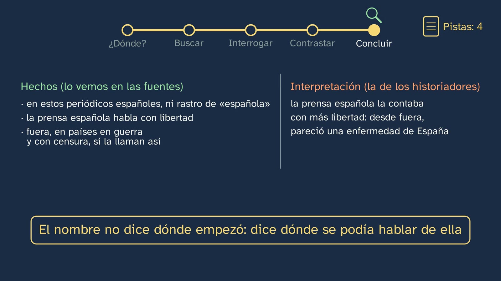
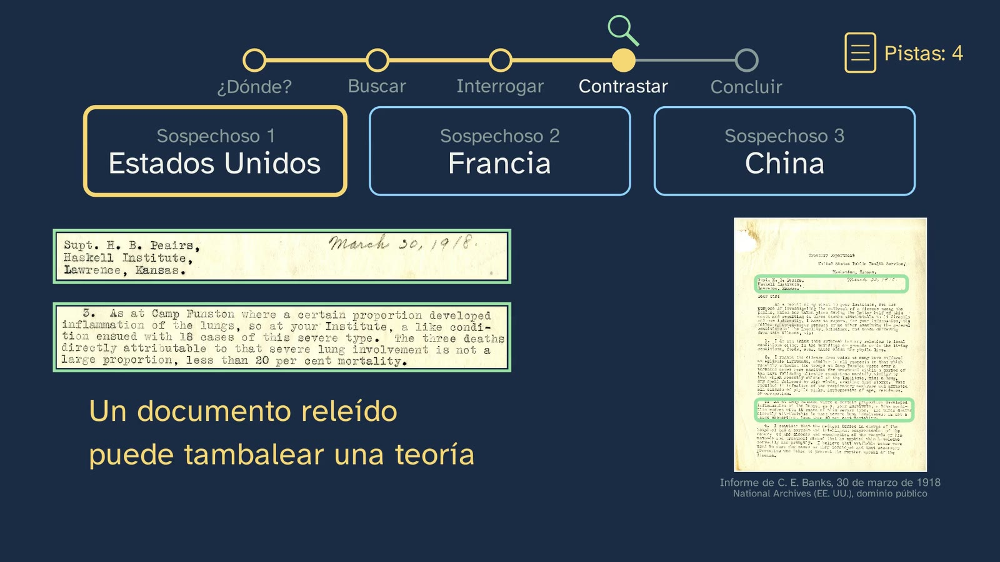

Workshop: a day in the archive
In a nutshell
This is the course's first history workshop: in History, the lab is the archive. The class sets a mission with a real mystery, why is the 1918 flu called "Spanish" if it almost certainly didn't start in Spain?, and solves it the way a historian would, in five steps that stay visible throughout: deciding where to look, searching, questioning, cross-checking and concluding. With real documents: the Madrid press of May, June and July 1918 in the Digital Newspaper Library (Hemeroteca Digital) of the National Library of Spain (El Liberal, El Sol, España Nueva and La Acción), and a US daily from September (The Seattle Star, in the Library of Congress).
What students discover: in those Spanish newspapers the epidemic is "the fashionable illness", "the Naples soldier" or "the three-day fever", and of "Spanish", not a trace; abroad they do call it that, and the US daily, under the motto "If it helps win the war, the Star is for it", blames the Germans with one opinion and two coincidences. The class keeps the facts (what the sources say) apart from the historians' interpretation (wartime censorship and the greater freedom of the Spanish press in the spring of 1918), and closes with the idea from class 1: the name is wrong about where the epidemic began, but it tells, without meaning to, where people could talk about it. Then comes why everyone's memory has to be preserved, who can consult it, and oral sources.
Objective. By the end, students will know what an archive, a newspaper library, a museum and an interpretation centre keep; be able to find a document in an open digital newspaper library, question it with the four questions and cross-check it; and explain why documentary heritage is everyone's memory and has to be preserved.
For readers outside Spain: the Bachillerato is the last two years of secondary school (ages 16–18). Contemporary World History is an elective in the first year of the Humanities and Social Sciences track. Spain is divided into seventeen autonomous communities (regions), plus the autonomous cities of Ceuta and Melilla, and these into fifty provinces: that is why the class sends students to the press of their own province. The video is in Spanish, with English subtitles; the images on this sheet come from the video and keep their Spanish text. The translations of Spanish documents (the decree, the 1918 newspapers, the law) are our own; English documents are quoted in the original.
Curriculum
Spain's Royal Decree 243/2022, Contemporary World History, an elective in the first year of the Bachillerato in Humanities and Social Sciences (consolidated text in the Official State Gazette, BOE, checked on 04/10/2026). Our translation of the official Spanish text. This is a "history workshop", the format the decree itself asks for in competence 8: "research work, in the form of history workshops, in which students have first-hand experiences through the use of documents from archives or digital newspaper libraries and through work with oral, graphic or audiovisual sources, especially in local contexts".
| Element | What the decree says | Where the class works on it |
|---|---|---|
| Core knowledge (block A, "Societies in time") | "The historian's work: historical sources, historiography and narratives of the past. […]" | The whole class: searching for, questioning and cross-checking primary sources; the historians' interpretation, kept apart from the facts |
| Core knowledge (block C, "Civic engagement") | "Conservation and dissemination of historical heritage: the heritage, social and cultural value of collective memory. Archives, museums and centres for historical outreach and interpretation." | The four doors (archive, newspaper library, museum and interpretation centre) and "Everyone's memory": preserving, the law, access, and the archives of every province |
| Specific competence 5 | "To identify and recognise the main challenges of the 21st century through advanced processes of searching for, selecting and processing information, and the cross-checking and critical reading of sources, in order to understand the historical phenomenon of globalisation, its impact at the local and planetary level and on people's daily lives […]" | Its method side: searching with several words, knowing that not everything is digitised, cross-checking the press at home and abroad. A pandemic that goes round the world in the middle of a world war also gives a glimpse of globalisation |
| Specific competence 8 | "To describe and analyse the changes and continuities that have taken place in contemporary society, demographic behaviour, ways of life and the life cycle […], carrying out research projects and applying historical thinking to recognise the value and importance of the anonymous figures of history." | The whole workshop and its "do it yourself" task: the 1918 flu in the press of the student's own province (a demographic behaviour, in a local context) and an oral source from 2020 |
| Criterion 5.1 | "To analyse critically the historical phenomenon of globalisation and its impact at the local and planetary level, making use of different sources of information and of their proper selection, validation, cross-checking and processing, preventing disinformation […]" | Its method side: selecting, validating and cross-checking; the clue that is not proof (the search that depends on OCR) and the coincidence that is not a cause (the Star) |
| Criterion 8.1 | "To analyse changes and continuities in history, paying attention to longer-term processes, such as demographic behaviour, life cycles and ways of life in contemporary society, through an approach to historical thinking and the carrying out of research projects […]" | The small research project of the "do it yourself" task (the October 1918 press of the student's province, in a table) and the comparison between 1918 and 2020 |
What students need to bring. The four questions from class 1 (who made it, when and where, what for and for whom) and the idea that a source that is wrong about one thing can tell the truth about another (the retouched photo of Trotsky). From lower secondary (ESO): the meaning of archives, libraries and museums as collective heritage (Royal Decree 217/2022, Geography and History in years 1 and 2).
How the class is built
Video chapters
About seventeen and a half minutes, in ten chapters. The mission organises the class: the five-stop route at the top, with the magnifying glass on the stop of each moment, and a clue notebook that adds one clue with each find, make the reasoning visible (Ritchhart, Church and Morrison, 2011) and keep students from losing the thread in a long class. Students question the documents before hearing the interpretation, as the decree asks of these workshops.
| Chapter | What happens | Why this way |
|---|---|---|
| Workshop day | Tristán, for the first time in an archive reading room, introduces the workshop; on the map of the topic, the class with the magnifying glass. | The archive scene is to the workshop what the lab coat is to the science lab. |
| What you already know | What are the four questions we ask of a source? Pause. And the solutions to the three exercises from class 1, short. | Retrieving what the workshop is going to use; the spaced practice, closed. |
| The mission | Tristán, to camera: the 1918 flu went round the world; we call it Spanish, and it almost certainly didn't start in Spain. The mission and its five steps. The bet, with three options. | A question with a counter-intuitive answer hooks students; betting commits them to a hypothesis that is tested later (White and Gunstone, 1992). |
| Where do we look? | Four doors: archive, newspaper library, museum and interpretation centre, each with what it keeps. Which door do you knock on to find out what the 1918 newspapers said? Pause. The newspaper library, even though the class is called "a day in the archive". | The core knowledge of block C, put to immediate use: choosing where to look is the first move of any investigation. |
| Search | The BNE's Digital Newspaper Library (drawn as a diagram), one word and some dates; two tricks: try several words, because the machine misreads old print, and follow other researchers' leads. The typical mistake: "everything is on the internet". | Searching well has to be taught: OCR fails (in España Nueva it reads "soldado d© Nápoles") and not everything is digitised. |
| Question it | El Liberal, 21 May 1918: "Can one live? The fashionable illness". Does it say "Spanish flu"? Pause. No. España Nueva, 5 June: the nicknames. The sheet of the four questions: first the student (pause), then Tristán; and what the newspapers tell without meaning to: that it seemed mild, and that the Spanish press talked about it freely, even criticising the authorities. | The document before the interpretation; each answer with its mark: I see it, a source says so, I infer it. |
| Cross-check | Searching for the phrase "gripe española" (Spanish flu), it does not appear until 3 July, in a telegram about Germany (a clue, not proof); La Acción, 12 July, mocks the name arriving from abroad; The Seattle Star, 19 September: "Spanish influenza" and the "Huns" from the U-boats. What evidence does it give? Pause. One opinion and two coincidences: coinciding is not causing. Its motto. Wartime censorship, and the Spanish press, freer in May; each country blamed another. And where it began: three suspects (the United States, France, China), with their evidence and objections, the "Haskell" notice reread in the archive, what genetics says and what can be said today. | Cross-checking at home and abroad, and weighing each clue: the one that depends on OCR, the coincidence that is not a cause. |
| Conclude | Facts (what the sources say) and interpretation (the historians'), in two columns. As with the photo of Trotsky: the name is wrong about where it began and tells where people could talk about it. The bet, checked. | Class 1 taught how to tell fact from interpretation; the workshop models it with a real historical explanation. |
| Everyone's memory | The mission only had an answer because someone kept those newspapers; acidic paper; only pencils in the reading room. The four verbs of the law (gather, preserve, organise, disseminate) and access; the Ministry's archives and the provincial ones; oral sources, and the student as a source for 2020. | Why heritage matters, once students have needed it. |
| Your turn | The flu in your province's press in October 1918; the doors; an oral source; the open question; the Ágora and the next class. | A small local research project, as competence 8 asks. |

A plan for a 50-minute lesson
| Minutes | What to do |
|---|---|
| 0–4 | No video: the bet, in writing. Why do you think the 1918 flu is called "Spanish"? Each student chooses one of the three options on the worksheet and writes why. |
| 4–12 | Video to the end of "Where do we look?" (4:09). Stop at the question of the doors (3:51) and let each pair choose and justify it. |
| 12–20 | Video from 4:09 to 6:26: searching and the first article. At the pause for the sheet (6:26), stop the video: each pair fills in the worksheet's sheet on El Liberal (five minutes). |
| 20–32 | Video from 6:31 to 13:12: comparing the sheet with Tristán's, the cross-check and the three suspects. Stop at "What evidence does the article give?" (8:37): each pair looks for it in the translation. |
| 32–38 | Video from 13:12 to 16:03: the conclusion, the bet checked and everyone's memory. Back to the bets from the start: who got it right, and for what reason? |
| 38–48 | The activity (below): the flu in our province's press, in the computer room or with phones. |
| 48–50 | Video from 16:03 to the end. The oral source, for homework with the worksheet. |
Typical mistakes and how they are handled
- "Everything is on the internet, and what isn't there doesn't exist". It is the mistake the class tackles head-on (4:46). Two facts take it apart: not everything is digitised (in the European ENUMERATE survey of 2017, museums, libraries and archives had digitised, on average, about a fifth of their collections), and what is digitised cannot always be found: the BNE's search engine cannot read the El Liberal article the class shows, and in España Nueva it reads "soldado d© Nápoles". Spain has no official overall figure for what has been digitised; in PARES, the portal of the State archives, 37.58% of what is described has an image, which is not the same as 37.58% of everything they hold.
- "The name says where it comes from". It is bet number one, the one the name itself suggests, and the one the class takes apart. It helps if students say it out loud before watching the video: that way the final check is felt.
- "They coincide, so one causes the other". The Seattle Star does exactly that: the flu appears where there are army camps, and in Spain after the German U-boats, so the Germans must have sown it. The class turns it into a stop-and-think moment (8:37): one opinion ("It is quite possible…") and two coincidences are not evidence.
- Taking the interpretation for a fact. "The flu was called Spanish because of censorship" sounds like a fact, and it is the explanation historians give because it fits the clues (Trilla, Trilla and Daer, 2008: "It is usually accepted…"). The class puts it in its own column (13:12). And it has nuances worth knowing: Spain also had prior censorship in 1917 and between 1 September and 17 October 1918, though not in May and June 1918, when the flu arrived (del Valle, 1981, p. 124; a single, academic source). Nor should we say that Spain was "the only" or "the first" country to report it: the class says that its press reported it more freely, which is what the sources support.
- "An archive is a store of old papers". The four doors and the law take it apart: an archive gathers, preserves, organises and disseminates the documents an institution or a person produces in the course of its activity (Law 16/1985, art. 59), and today's material is archived too: the National Library has been collecting .es websites since 2009 (the Spanish Web Archive; legal deposit since Royal Decree 635/2015).

Questions and solutions
Stop and think (in the video)
- What are the four questions we ask of a source? (0:30) Who made it, when and where, what for and for whom (class 1).
- The bet: why do you think they called it "Spanish"? (2:55) Not corrected yet: it is checked at the end (14:09). One (it started in Spain) is what the name suggests, and the evidence says it almost certainly was not so; two (it was worse in Spain) does not fit the class's sources either, which considered it mild and, in June, declining; the one that fits the clues is three, another reason: the Spanish press reported it more freely.
- Which door do you knock on to find out what the 1918 newspapers said? (3:51) The newspaper library: it keeps newspapers and magazines, what was published day by day. "A library" is acceptable as a partial answer, because newspaper libraries are usually inside libraries (the BNE's is).
- Does it say "Spanish flu"? (5:42) No: "la enfermedad de moda" ("the fashionable illness"), and the article adds that at one theatre they call it "fiebre gripal" ("flu fever"). Our translations.
- The sheet on El Liberal (6:26). Who: a Madrid daily, El Liberal; the article is not signed (I see it). When and where: Madrid, 21 May 1918, in the middle of the First World War (I see it; the war, a source says so). What for: to report what was happening in the city, and with humour: it talks about the theatres, with actors and musicians off sick (I infer it from the tone). For whom: readers in Madrid (I infer it). What it tells without meaning to: that at first it seemed mild ("leve por fortuna", "mild, fortunately", our translation) and that the Spanish press talked about the epidemic without restrictions, even in jest. Other reasoned answers are valid; what teaches most is the mark saying how each one is known.
- What evidence does the Seattle Star article give? (8:37) An officer's opinion ("It is quite possible the epidemic was started by Huns sent ashore by boche submarine commanders") and two coincidences: the disease "has appeared in cities where there are army or navy training camps", and "the malady made its appearance in Spain after the appearance in ports of that country of German U-boats". Nothing proves that one thing causes the other. And the article tells, without meaning to, something else: that in the United States people believed the flu had appeared in Spain.

From the student worksheet
- Two tricks for searching. Try several words ("gripe", "epidemia", "enfermedad": flu, epidemic, illness), because the computer misreads the print of old newspapers and sometimes cannot find a word that is there; and follow the leads of other researchers, who cite where they found a document.
- Fact or interpretation? 1) Fact: it can be read on the page. 2) Well-supported interpretation: it is the historians' explanation ("It is usually accepted…", Trilla, Trilla and Daer, 2008), because it fits all the clues in the class; but no document says it in so many words. 3) Fact: it can be read on the front page of 19 September 1918. 4) Unsupported interpretation: the article only gives an opinion and two coincidences, and coinciding is not causing. 5) Disputed interpretation: it is one of the hypotheses (defended by the historian John M. Barry, 2004); others point to France or China, and the origin is still debated (CDC; Worobey, Cox and Gill, 2019). Items 4 and 5 teach the most: they sound like facts and are not.
Practice (the solutions open class 3)
- The flu in your province's press, in October 1918. It is open-ended: every province has its own press. Criteria: the complete table (date, newspaper, what it calls the flu and the four questions, each with its mark of how it is known); at least two articles from different dates; and, for a high mark, something they tell without meaning to (the town council's measures, the death notices, the adverts for remedies, whether they play it down or raise the alarm) and a comparison with what was seen of Madrid in May. By October, newspapers often say simply "la gripe" or "la epidemia"; if any says "española", have students note it down: it is a good finding for the next class. Anyone who cannot find press from their province for those dates can use the nearest province's, and say so.
- Which door would you knock on? The town council's minutes from 1918: the archive (your town's municipal archive, or the provincial historical archive). An advert for a flu syrup: the newspaper library. A thermometer from the time: the museum (for example, a museum of the history of medicine or of pharmacy). Criterion: the reason, not the label: the archive keeps what an institution produces in the course of its activity; the newspaper library, what was published; the museum, objects.
- An oral source from 2020. Open-ended. Criteria: who tells it, and when and where they lived it, with their permission; what is memory, kept apart from what is today's opinion; and a source to cross-check it with (a news item from those days, a saved message, another person's memory). Take care: in many families 2020 brings back sad memories; the task asks students to choose another memory if so, and nothing the family does not want shared should be shared in class.
Keep thinking. If you had to keep five things in an archive today so that our time can be understood a hundred years from now, which would you choose? And who should decide what is kept? It has no textbook answer. Some pointers for the debate, without closing it: what is more likely to be lost, a piece of paper or a digital file? What is already kept without our deciding it (the BNE archives .es websites)? What is never kept (conversations, everyday life), and is that why oral sources are so valuable? Should the State decide, or historians, or each of us? The teacher moderates and does not give a verdict.

A classroom activity
The 1918 flu in our province (about 12 minutes in class, which can be extended to a full session). It is the workshop's "do it yourself" task, done in groups, and it works on criteria 5.1 and 8.1.
Materials: computers or phones, and the table on the student worksheet. Where to look: the Biblioteca Virtual de Prensa Histórica (Virtual Library of Historical Press) of Spain's Ministry of Culture, which brings together the digitised press of every region (more than 17 million pages, from 1730 on); the BNE's Digital Newspaper Library; and each region's digital library (table below). Outside Spain, the same activity works with the local press of autumn 1918 in any country: the open newspaper libraries of the world are listed further down.
- Share out (2 minutes). Each group gets one half of October 1918 (1st to 15th or 16th to 31st) and a newspaper from the province (or from the nearest one).
- Search (5 minutes). With several words: "gripe", "epidemia", "grippe"; if the newspaper is in Catalan, Galician or Basque, in that language too (and check which word was used at the time). If the search engine finds nothing, leaf through the day's pages: OCR fails.
- Question it (3 minutes). One article per group, in the table: date, newspaper, what it calls the flu and the four questions, each with its mark.
- Pool (2 minutes). On the board, one line per group. Does the tone change from one half of the month to the other? Does anyone call it "española"?
For teachers: at the October peak, many newspapers devoted whole pages to death notices (Trilla, Trilla and Daer, 2008): looking at them is also research, handled with care. And a question for anyone who wants to go further: between 1 September and 17 October 1918 there was prior censorship throughout Spain (del Valle, 1981, p. 124, a single source). Does it show in what you find? Are there blank gaps, or the stamp "visado por la censura" ("passed by the censor")? Whatever students find, the class can share in the Ágora (the channel's forum, in Spanish), in this class's thread.
Each region's digital library (checked on 04/10/2026; the press of all of them is also in the Biblioteca Virtual de Prensa Histórica, BVPH). The libraries keep their own names; "historical press" says whether each one has digitised old newspapers:
| Region (autonomous community) | Digital library | Historical press |
|---|---|---|
| Andalusia | Biblioteca Digital de Andalucía | partial |
| Aragon | Biblioteca Virtual de Aragón | yes |
| Asturias | Biblioteca Virtual del Principado de Asturias | yes |
| Balearic Islands | Biblioteca Digital de les Illes Balears | yes |
| Canary Islands | Jable, Archivo de Prensa Digital de Canarias | yes |
| Cantabria | (no regional digital library) | in the BVPH |
| Castile and León | Biblioteca Digital de Castilla y León | yes |
| Castilla-La Mancha | Patrimonio Digital de Castilla-La Mancha | yes |
| Catalonia | ARCA and Premsa digitalitzada de la XAC | yes |
| Valencian Community | BIVALDI | yes |
| Extremadura | Ciconia | in the BVPH |
| Galicia | Galiciana | yes |
| Community of Madrid | Biblioteca Digital de Madrid | yes |
| Region of Murcia | Biblioteca Digital de la Región de Murcia | in the BVPH |
| Navarre | Biblioteca Navarra Digital | in the BVPH |
| Basque Country | Euskariana | yes |
| La Rioja | Biblioteca Virtual de La Rioja | in the BVPH |
| Ceuta and Melilla | (no digital library of their own) | in the BVPH |
Open resources: newspaper libraries of the world
What the class teaches can be carried on with newspapers from all over the world, free and without registering. Twelve digital newspaper libraries checked on 04/10/2026, from the nearest to the furthest (seen from Spain); all have full-text search.
| Newspaper library | What it offers |
|---|---|
| Biblioteca Virtual de Prensa Histórica (Spain) | The first door: the press of every province, in Spanish and in Spain's other official languages, under a free licence. It also has the Diario de la Marina of Havana |
| Hemeroteca Digital de la BNE (Spain) | The big Madrid dailies of 1918 (El Sol, El Liberal…) and Latin American magazines such as Caras y Caretas |
| Hemeroteca de La Vanguardia (Spain) | A whole daily newspaper, day by day, since 1881, with a very handy date search. Free in exchange for accepting advertising cookies: with minors, it is best opened by the teacher |
| Europeana, "Newspapers" (Europe) | A single search across the press of many European countries (the link opens the Spanish interface) |
| Gallica (France) | The press of a country at war and under censorship, to compare with the Spanish press (free viewing and non-commercial use) |
| ANNO (Austria) | The other side in the war: Vienna's Neue Freie Presse, day by day |
| Le Temps archives (Switzerland) | Another neutral country, like Spain, in French and with a simple search |
| Chronicling America (USA) | Millions of pages, 88 Spanish-language newspapers and a Library of Congress guide to the 1918 flu |
| Trove (Australia) | The easiest: each article comes separately, with its text, and one word is enough |
| Hemeroteca Nacional Digital de México (Mexico) | Mexican press in Spanish, with a search engine that highlights the word on the page |
| Digital Library of the Caribbean (Cuba, Puerto Rico…) | Caribbean press in Spanish, with full text |
| Digital collections of the IAI, Berlin (Argentina and others) | Latin American illustrated magazines, with a Spanish-language interface (Ibero-American Institute) |
Words to search for the 1918 flu: "gripe", "grippe", "influenza" and "epidemia" in Spanish (the 1918 press often wrote "grippe"); "grip" in Catalan; "grippe espagnole" in French; "spanische Grippe" in German; "Spaansche griep" in Dutch, with the spelling of the time; "Spanish influenza" in English; "febbre spagnola" in Italian.
The 1918 flu in the world's press (issues checked on 04/10/2026; each opens in its newspaper library; the translations in brackets are ours):
| Country | Newspaper and date | What it says |
|---|---|---|
| Spain | La Vanguardia, 31-10-1918, p. 6 | "…quedando contagiado de dicha enfermedad…" (the grippe) ["…having caught the said disease…"] |
| Spain (Catalonia) | El Baix Penedès, 5-10-1918, p. 2 | "a causa de la forta invasió de grip" ["because of the severe outbreak of flu"] |
| Cuba | El Imparcial (Havana), 2-12-1918, p. 7 | "La influenza española" ["The Spanish influenza"] |
| Mexico | El Pueblo, 20-11-1918, front page | "Chávez García falleció, víctima de la influenza" ["Chávez García died, a victim of the influenza"] |
| Argentina | Mundo Argentino, 13-11-1918, p. 3 | "El decálogo contra la grippe" ["Ten rules against the grippe"] |
| Portugal | Ilustração Portugueza, no. 661, 21-10-1918 | "grippe pneumonica" ["pneumonic grippe"] |
| France | Le Petit Parisien, 16-10-1918, p. 2 | "Comment se préserver de la grippe" ["How to protect yourself from the grippe"] |
| Netherlands | Nieuwsblad van het Noorden, 17-10-1918 | "De Spaansche griep" ["The Spanish flu"] |
| USA | The Washington Times, 6-10-1918, p. 22 | "Medical Science's Newest Discoveries about the 'Spanish Influenza'" |
| Australia | Sunday Times (Perth), 27-10-1918, p. 1 | "Spanish influenza. Hour it might reach us" |
| New Zealand | Poverty Bay Herald, 7-10-1918, p. 5 | 'Spanish "grippe."' |
A comparison for the classroom: a neutral country against one at war, in October 1918: La Vanguardia or the BVPH (Spain) against Le Petit Parisien (France), or the Journal de Genève (Switzerland, in Le Temps archives) against the Neue Freie Presse (Austria, in ANNO). What does each one call it? How much space does it give it? Before the class, it is worth opening the links from the school's network: some foreign websites block certain networks.
Where it began: for teachers
The class presents three suspects and what can be said today. What does not fit in the video, with its sources:
- Kansas. The Camp Funston outbreak (March 1918) was mild: many ill and few dead (Worobey, Cox and Gill, 2019). John M. Barry's hypothesis places the origin in Haskell County in January 1918, and the US Census Bureau (2023) follows it. Against it: New York's first wave, from February to April 1918 (Olson et al., 2005, inferred from mortality, without samples), and Peter Grant's study (2020), which attributes the notice of 5 April to Haskell Institute, in Lawrence. The original report on that outbreak, of 30 March ("18 cases of this severe type"), is in the National Archives (NAID 2641555). In the Kansas State Board of Health records for 1918, Haskell County has no flu deaths at all in the whole year. We should not say "the most accepted theory is Kansas": it was until 2005.
- Étaples and Aldershot. The "purulent bronchitis" of 1916–1917 (Hammond, Rolland and Shore, The Lancet, 1917) killed mainly soldiers aged 25 to 35 and caused a "heliotrope" cyanosis, like the 1918 flu. The Aldershot doctors wrote in 1919 that it was "fundamentally the same condition". In April 2026, Gill and Oxford pressed this hypothesis again with records from British hospitals, and acknowledged that without tissue from those patients the link "will never be established". Against it: that disease did not spread beyond the camps, and in fourteen European countries mortality rose almost at the same time in the autumn of 1918 (Ansart et al., 2009).
- China. Humphries (2014) found in British and Canadian archives a respiratory disease in northern China in November 1917. Against it: in France, the Chinese workers fell ill after the units next to them (Shanks, 2016), and there were no outbreaks in Canada, which they passed through. In its favour: in China the pandemic was milder (Langford, 2005; Cheng and Leung, 2007), and Langford explains this, as a conjecture, by prior immunity.
- Genetics. The virus was reconstructed between 1997 and 2005 from lungs kept in paraffin since 1918 and from those of a victim buried in the frozen ground of Brevig Mission (Alaska). Almost all its genes come from birds; when it formed varies with the study (Worobey: around 1915; Taubenberger: in 1918 or shortly before). The only somewhat persuasive clue about the place, "by no means conclusive", is that the bird genes seem to come from North American birds (Worobey, Cox and Gill, 2019), which is not the same as Kansas.
- Why so many young people died, a question students often ask: the peak of deaths was around age 28. The explanation with most support is a hypothesis: the flu they had caught as babies, that of 1889–1890 (Gagnon et al., 2013; Worobey, Han and Rambaut, 2014).

To find out more
- Other names. In Senegal it was called "Brazilian flu": it reached Dakar with ships of the Brazilian navy, and the only file on the pandemic in the National Archives of Senegal is titled "La Grippe Brésilienne, Dakar, 1918" (Echenberg, 2003; Spinney, 2017).
- The US Government, in 1918. The bulletin of the Surgeon General, Rupert Blue, calls it "Spanish influenza" in the same sentence in which it says that "there is no reason to believe that it originated in Spain" (reprinted in the Anaheim Gazette, 17-10-1918, p. 3). The name had already stuck.
- Today. Since 2015 the World Health Organization has recommended not naming new diseases after places, and it gives "Spanish flu" as an example to avoid.
- Preserving. The Declaration of Independence of the United States can barely be read: it spent thirty-five years opposite a sunny window in the Patent Office (1841–1876), and today it is kept in titanium cases filled with argon (National Archives). Whether the 1823 copying also damaged it is something that, according to its own conservators, may never be known.
- Oral sources. Between 1973 and 1975 Ronald Fraser interviewed some three hundred people from both sides for Blood of Spain (1979; in Spanish, Recuérdalo tú y recuérdalo a otros, Crítica, 1979), the oral history of the Spanish Civil War. Spain has oral-history archives such as the Archivo de la Palabra (Archive of the Spoken Word) of Castilla-La Mancha, on everyday life in the early 20th century.
Sources
- Royal Decree 243/2022, consolidated text (BOE, in Spanish): https://www.boe.es/buscar/act.php?id=BOE-A-2022-5521. Royal Decree 217/2022 (lower secondary, ESO; in Spanish): https://www.boe.es/buscar/act.php?id=BOE-A-2022-4975.
- The 1918 newspapers, Digital Newspaper Library of the National Library of Spain (public-domain images, CC BY 4.0, "Imágenes procedentes de los fondos de la Biblioteca Nacional de España", images from the collections of the National Library of Spain): El Liberal, 21-5-1918, p. 2 (https://hemerotecadigital.bne.es/hd/es/viewer?id=3c40dacd-aeea-4037-a167-ed792a775846&page=2); El Sol, 28-5-1918, p. 1 (https://hemerotecadigital.bne.es/hd/es/viewer?id=ee063aa1-ab57-446a-805b-e1358605960e&page=1) and 3-7-1918, p. 5 (https://hemerotecadigital.bne.es/hd/es/results?id=0c777186-cb25-4451-91ec-a571abd49416); España Nueva, 5-6-1918, p. 4 (https://hemerotecadigital.bne.es/hd/es/viewer?id=5572a8fb-76e7-4cbf-97b6-01fb95d0fa5f&page=4); La Acción, 12-7-1918, p. 1 (https://hemerotecadigital.bne.es/hd/es/viewer?id=129c3adf-4b65-49a7-9472-a19f83b16f25&page=1). The translations of their quotations are ours.
- The Seattle Star, 19-9-1918, Night Edition, p. 1 (LCCN sn87093407), Chronicling America, Library of Congress, public domain: https://www.loc.gov/resource/sn87093407/1918-09-19/ed-1/?sp=1.
- A. Trilla, G. Trilla and C. Daer (2008). The 1918 "Spanish Flu" in Spain. Clinical Infectious Diseases, 47(5), 668–673: https://doi.org/10.1086/590567.
- G. Chowell, A. Erkoreka, C. Viboud and B. Echeverri-Dávila (2014). Spatial-temporal excess mortality patterns of the 1918–1919 influenza pandemic in Spain. BMC Infectious Diseases, 14, 371: https://doi.org/10.1186/1471-2334-14-371.
- J. A. del Valle (1981). La censura gubernativa de prensa en España (1914-1931) [Government press censorship in Spain, 1914–1931]. Revista de Estudios Políticos, 21, 73–126 (in Spanish): https://dialnet.unirioja.es/descarga/articulo/26656.pdf.
- On the origin, still debated: CDC, "1918 Pandemic (H1N1 virus)": https://archive.cdc.gov/www_cdc_gov/flu/pandemic-resources/1918-pandemic-h1n1.html; M. Worobey, J. Cox and D. Gill (2019). Evolution, Medicine, and Public Health, 2019(1), 18–25: https://doi.org/10.1093/emph/eoz001.
- Press censorship in the United States: National Archives, Records of the Committee on Public Information ("Administered voluntary press censorship"): https://www.archives.gov/research/guide-fed-records/groups/063.html.
- "Huns" in Allied propaganda: University of East Anglia, "Wilhelm II's 'Hun Speech' and its alleged resemiotization during World War I": https://ueaeprints.uea.ac.uk/id/eprint/65777/.
- M. Echenberg (2003). "The dog that did not bark": Memory and the 1918 influenza epidemic in Senegal. In H. Phillips and D. Killingray (eds.), The Spanish Influenza Pandemic of 1918-19: New Perspectives. Routledge.
- R. Blue, "Uncle Sam's Advice on Flu", in the Anaheim Gazette, 17-10-1918, p. 3: https://yoreanaheim.com/view/anaheim_gazette_1918_ag_1918_10_17/2.
- WHO, "WHO issues best practices for naming new human infectious diseases", 8 May 2015.
- Spain's Historical Heritage Act, Law 16/1985, arts. 57 and 59 (in Spanish): https://www.boe.es/buscar/act.php?id=BOE-A-1985-12534. Spanish Constitution, art. 105 (in Spanish): https://www.boe.es/buscar/act.php?id=BOE-A-1978-31229.
- Spain's State Archives: rules on access and consultation (2024) and the PARES FAQ (in Spanish): https://pares.cultura.gob.es/preguntas-frecuentes.html; the archives: https://pares.cultura.gob.es/archivos-estatales.html; those run by the regions: https://www.cultura.gob.es/cultura/archivos/archivos-y-centros/gestion-autonomica.html.
- ENUMERATE Core Survey 4 (2017), Europeana: https://www.infodocket.com/2017/11/23/europe-charting-trends-in-digitisation-of-european-heritage-collections-results-from-enumerate-survey/.
- Library of Congress, "The Deterioration and Preservation of Paper: Some Essential Facts": https://www.loc.gov/preservation/care/deterioratebrochure.html.
- National Archives (USA), "The Declaration of Independence: A History": https://www.archives.gov/founding-docs/declaration-history.
- R. Ritchhart, M. Church and K. Morrison (2011). Making Thinking Visible. Jossey-Bass. R. White and R. Gunstone (1992). Probing Understanding. Falmer Press.
- Images: the newspapers, above; the emergency hospital at Camp Funston (Kansas), around 1918, National Museum of Health and Medicine, NCP 1603, public domain: https://commons.wikimedia.org/wiki/File:Emergency_hospital_during_Influenza_epidemic,_Camp_Funston,_Kansas_-_NCP_1603.jpg; the photos from 1937 and the one of Lenin, those from class 1 (Wikimedia Commons). The map of Spain and the world map, from Natural Earth (public domain).

About this class
GinCol Lab is a free science channel for curious minds. Tristán is an illustrated character, not a real person, and his voice is synthetic: computer-generated with Microsoft Azure AI Speech and not imitating any known person. The illustration and the archive scene were created with OpenAI's image generation. The script and this sheet are written by an AI (Claude, by Anthropic) and reviewed by a person; every fact has been checked in two sources or in the original. This English version was translated by the same AI.
This sheet is published under a Creative Commons Attribution 4.0 licence: you can copy it, adapt it and use it in your classroom, crediting GinCol Lab. The newspaper images have their own licence (public domain; the BNE's, CC BY 4.0, crediting their source).
How to cite this sheet
GinCol Lab (2026). Workshop: a day in the archive. GinCol Lab teacher sheet: Contemporary World History · 1st year of Bachillerato · The historian's craft · Class 2 of 6. https://gincollab.github.io/aula/en/historia-mundo-contemporaneo/t01-c2/. CC BY 4.0.
GinCol Lab teacher sheet · CC BY 4.0 · Source and errata